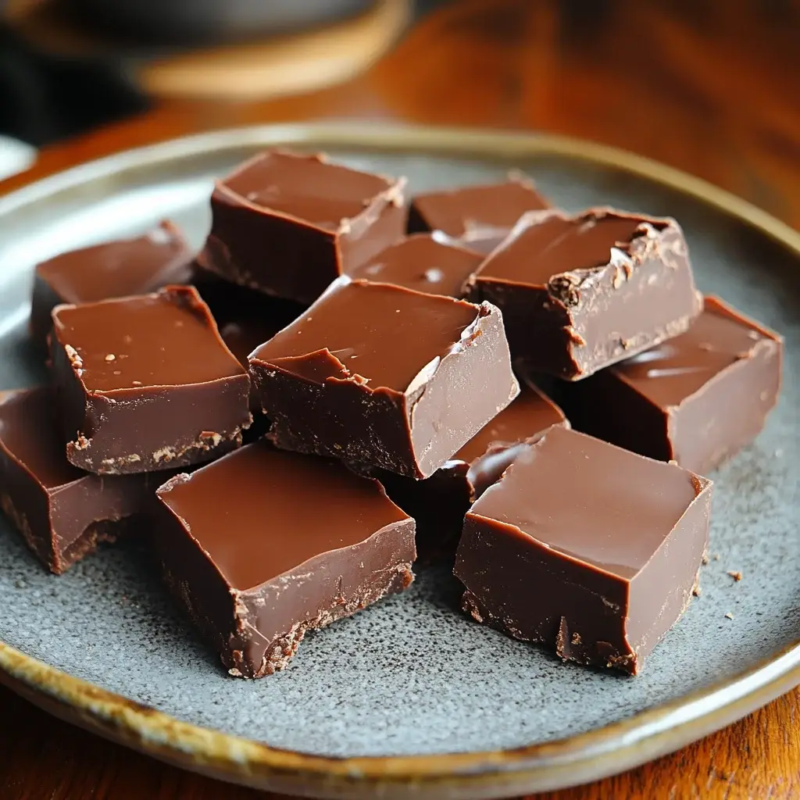

Chewy Fudge Recipe

This is the perfect and simplest recipe for a theme park style chewy chocolate fudge in the comfort of your own home! This recipe was sourced from a personal cookbook of a small time Albertan cook.
Ingredients:
- 3 cups milk chocolate baking wafers
- 1 can condensed milk
- 1/4 cup salted butter
Instructions:
- Melt all together in small-medium sauce pan
- Once melted and texture is even, pour evenely into 8*8 or 9*9 baking dish(any dish will work but these will give you photo accurate results)
- Allow to cool naturually at room tempurature completely before cutting(do not cool in fridge as it will change texture of fudge)
- once completely cooled at room temperature you can store in fridge or freezer for long term
- *optional - score entire top surface half way through cooling with fork to give a "crust" on fudge if preferred
- *optional - garnish with chocolate drizzle, crushed candy cane or any other topping preferred mid way through cooling
Home